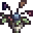

Wilted Bouquet
| Wilted Bouquet | |
|  | |
| A gift that shows you want to stop dating someone. | |
| Information | |
| Source | Furnace |
| Sell Price | |
| Crafting | |
| Equipment | |
| Processing Time | |
| Ingredients | |
The Wilted Bouquet is a special gift that you can give to any or all marriage candidates whom you are dating.
Giving a wilted bouquet immediately ends the dating relationship and reduces the friendship level with the marriage candidate to 5 hearts (1250 points). However, unlike having a divorce with a spouse, you are still able to talk and give gifts to them.
A Wilted Bouquet is created by putting a Bouquet into a furnace (requires one coal). It will be finished crafting when the clock ticks over to the next 10-minute interval.
The bouquet can be sold for  100g via the shipping box, the same sale price as a regular Bouquet. Pierre will not buy them back.
100g via the shipping box, the same sale price as a regular Bouquet. Pierre will not buy them back.
Tailoring
Wilted Bouquet is used in the spool of the Sewing Machine to create the Darkness Suit.
Trivia
- Attempting to give your spouse a Wilted Bouquet will bring up a text box that says, "It wouldn't make sense to give this to <spouse name>.".
History
- 1.4: Introduced.